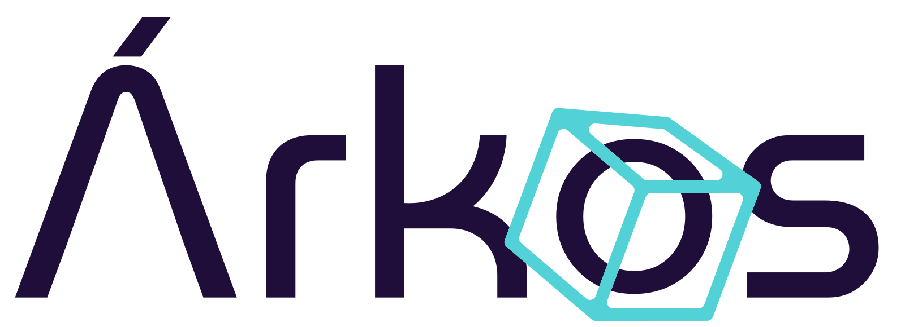

Tu pyme no necesita
otra
app
.
El problema son las que ya tienes:
viviendo
separadas
.
diagnóstico
3 señales de que ya las superaste:
Copian y pegan entre apps.
?
Nadie confía en los números.
Crecer = contratar, no escalar.
No te falta software.
Te falta
un sistema
.
Un sistema
vertical
,
hecho para tu operación.
Uno solo. Todo conectado. A tu medida.

Sistemas verticales
para pymes en
LATAM
.
¿Te suena?
Hablemos.
Rodrigo Torres · Árkos · arkos.com